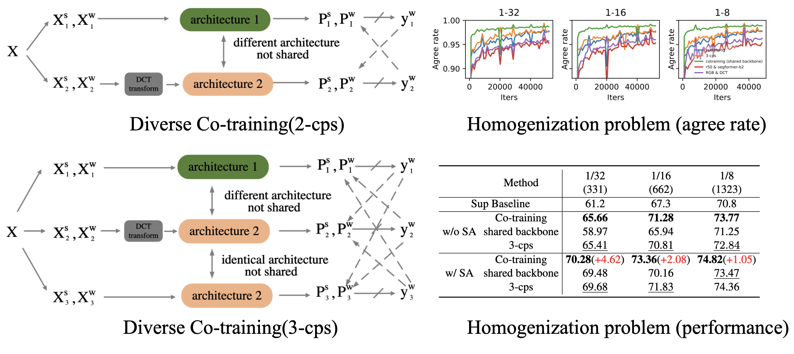
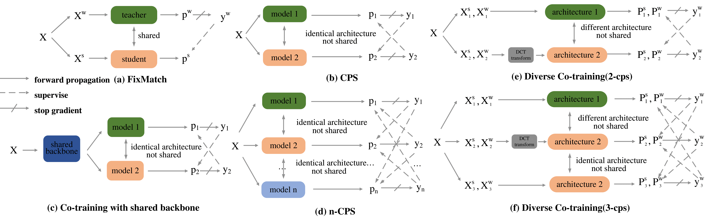
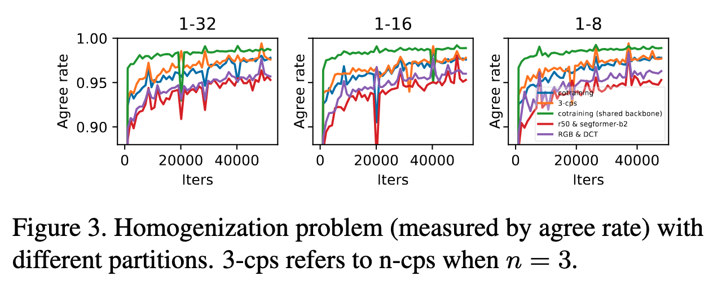
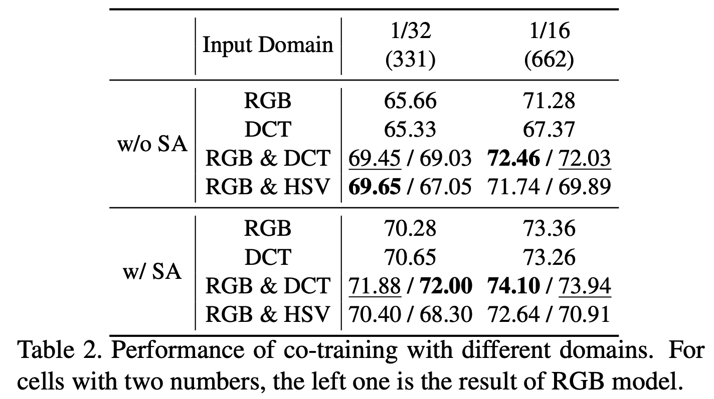
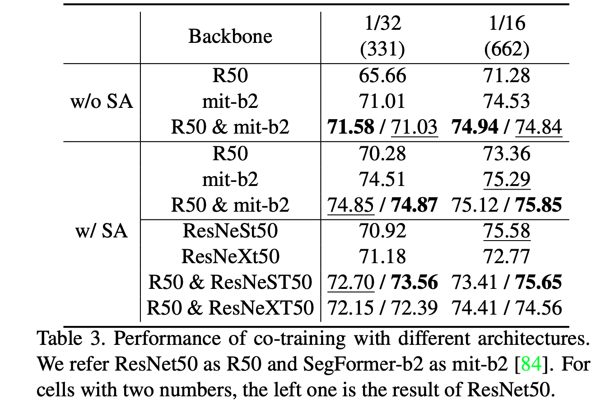

We revisit the core assumption that supports co-training in semi-supervised segmentation: multiple compatible and conditionally independent views. Current methods couple models tightly, causing sub-optimal performance. Diverse Cotraining promotes diversity via different input domains, architectures, and strong augmentations, achieving state-of-the-art results.




Diverse Cotraining surpasses existing co-training paradigms, benefiting from greater model diversity. The method demonstrates consistent improvements across datasets.
@inproceedings{li2023diverse,
title={Diverse Cotraining Makes Strong Semi-Supervised Segmentor},
author={Li, Yijiang and Wang, Xinjiang and Yang, Lihe and Feng, Litong and Zhang, Wayne and Gao, Ying},
booktitle={Proceedings of the IEEE/CVF International Conference on Computer Vision},
pages={16055--16067},
year={2023}
}